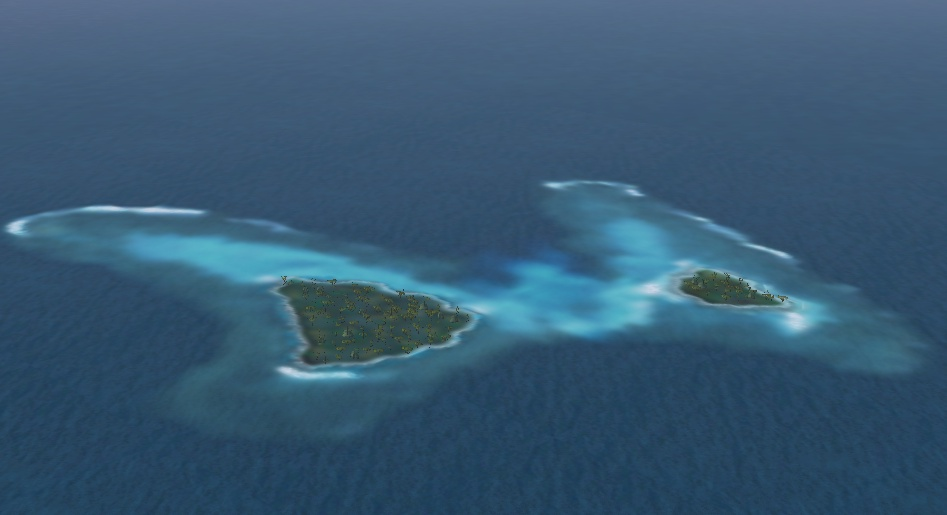
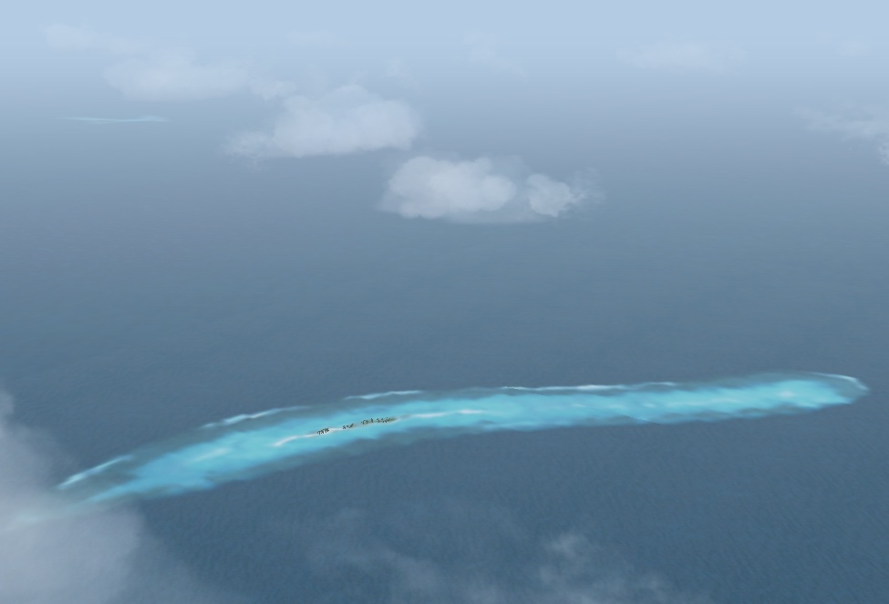

Butterfly Island is such a small island
that is included in the rectangle whose one side is 2km.
It is an island not recorded even in the map.
However, this island exists.
If you see the island once, you will never forget the shape and the beauty of this island.

This is "Caterpillar" island
located in the east of the Butterfly Island.
This "Caterpillar" island grows up to the Butterfly Island.
Of course, it is a joke (^^;.
I am only calling the name of this island "Caterpillar"
without permission.
I do not know a true name of this island.
Well, this island is also unique.
The island is too small and narrow to build a runway.
However, the reef that surrounds the island is a superb view.

It is Butterfly island looked at from the other side.
The Caterpillar island can be seen in the distance.

A shot of the Butterfly Island seen from the Caterpillar Island.
There is a formal English name in the Butterfly Island.
However, when the name is written here,
it will spoil the image that a word named the "Butterfly Island" has.
Therefore, the Butterfly Island was used for the name of this island here.
Click here in order to jump to the page which showed the exact position of the "Butterfly Island"